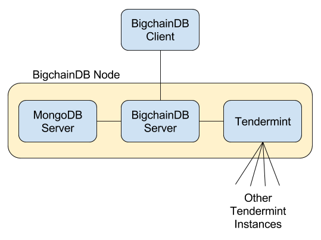

Production Node Components¶
A production BigchainDB node must include:
- BigchainDB Server
- MongoDB Server 3.4+ (mongod)
- Tendermint
- Storage for MongoDB and Tendermint
It could also include several other components, including:
- NGINX or similar, to provide authentication, rate limiting, etc.
- An NTP daemon running on all machines running BigchainDB Server or mongod, and possibly other machines
- Probably not MongoDB Automation Agent. It’s for automating the deployment of an entire MongoDB cluster.
- MongoDB Monitoring Agent
- MongoDB Backup Agent
- Log aggregation software
- Monitoring software
- Maybe more
The relationship between the main components is illustrated below.
